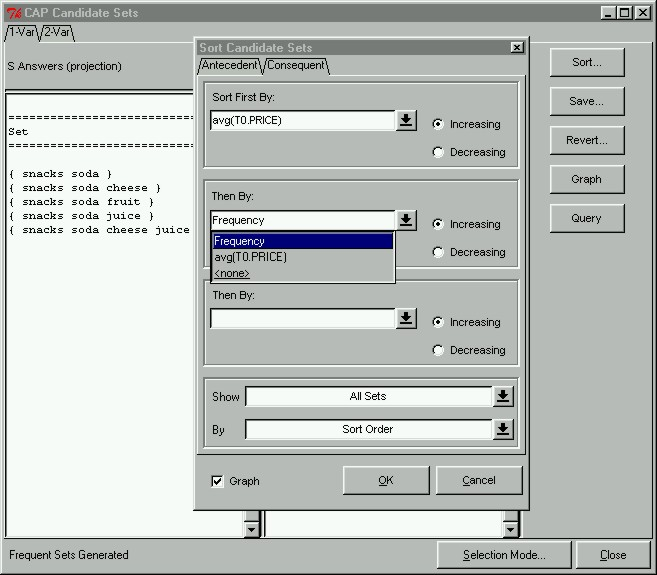

 |
Sorting Frequent SetsOne of the main goals of our prototype is to allow users to explore their data. Therefore, we found it imperative to allow users to sort frequent sets or pairs and change the view of their output (i.e. view only maximal sets). Sets and pairs can be sorted according to frequency or distance to a constraint. Constraint distance is a measure of the degree of how well a set or pair satisfies a constraint. To sort candidate sets, we click the "Sort..." button in the Candidate Sets Window, which will immediately open up the Sort Candidate Sets window shown here. In this demonstration, we will sort only the consequent sets; first according to the average price of items in the set, and second according to frequency. We can also enable the Graph option at the bottom, which indicates that we want to see a graph of our sorted output.
|